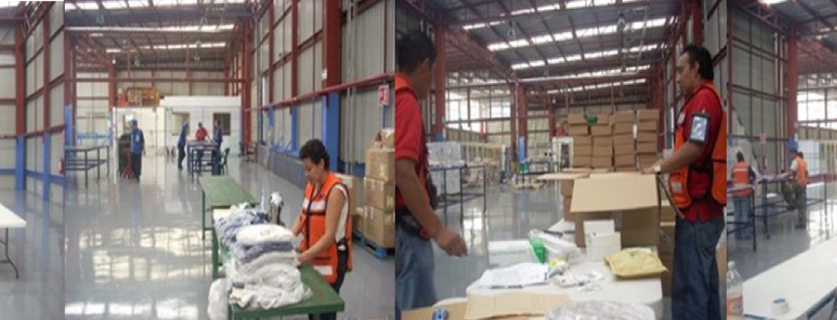

Proyecto Gregori
Ojos en previos
OBJETIVO DEL PROYECTO
- Contar con la informacion en línea de los previos.
- Evidencia del estatus del área de previos (Fotos en secuencia).
- Optimizar el proceso.
- No depender de un ISP (Proveedor de servicio de internet para obtener la información en linea).
- Ofrecer un nuevo servcio para nuestros asociados.
- Contar con otra ventaja competitiva.
Previos aduanales actuales

ETAPA DOS “DISPONIBILIDAD”